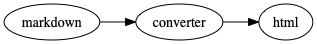

Building A Personal Website
(HPC Cluster Academy)
Elsa Gonsiorowski
July 20, 2020
Created: 2020-07-20 Mon 15:54
1 Goals
- Set up a markdown / web development environment on your machine
- Refresh your resume
- Build a personal website
Follow along: https://www.gonsie.com/gh-resume.html
2 Schedule
| 1-1:30 | Setup |
| 1:30-2:30 | Programming for Documents |
| 2:30-3:30 | Markdown |
| 3:30-4 | Static Websites |
| 4-5 | Building a Website |
3 Setup
3.1 Things You'll Need
- Resume
- Text editor with Markdown Support
- GitHub account
- Package manager to install Jekyll (optional)
3.2 Text Editor with Markdown Support
- Syntax highlighting
- Export / preview support (may require additional software)
3.3 Text Editor with Markdown Support
- Emacs (markdown-mode / MELPA)
- Vim (vim-markdown)
- SublimeText (packages: markdown)
- Atom (packages: markdown)
- VSCode (extensions: markdown)
- Web-based Dillinger
3.4 Package Managers
- MacOS
- Homebrew package manager
- Windows
- Windows Subsystem for Linux
- Suggested Linux: Ubunto Image
- Windows Subsystem for Linux
- Linux
apt-getfor Ubuntu/Debian distrosyumfor RedHat/CentOS distros
3.5 Jekyll
3.6 Activity: Setup
4 Programming for Documents
4.1 Computer Languages
A markup language is a system for annotating a document in a way that is syntactically distinguishable from the text.
A style sheet language, or style language, expresses the presentation of structured documents.
4.2 Computer Languages
4.3 Example
# This is a level 1 heading in markdown
<h1>This is a level 1 heading in HTML</h1>
* This is a level 1 heading in orgmode
This is some regular text.
This is some red text. \pause
Markup + Styling = Beautiful Documents
4.4 Markup Languages

4.5 Beautiful Web Documents
- HTML + CSS
- Structure and style a document
- Understood by browsers
- HTML Elements are marked at the beginning and end with a tag
- HTML Elements have attributes which provide additional information
- CSS Selects an element and sets properties
- W3Schools is a great reference
4.6 HTML Example
<!DOCTYPE html>
<html>
<head>
<link rel="stylesheet" href="basic.css"/>
<title>My web page</title>
</head>
<body>
<p class="ugly">This is some text on my webpage</p>
</body>
</html>
4.7 CSS Example
body {
color: blue;
}
p.ugly {
border-bottom: 1px dotted #999;
}
4.8 Rendered Example

4.9 Viewing a Web page
- Parse HTML to construct DOM tree (Document Object Model)
- Render tree construction / apply CSS
- Layout the elements
- Draw the page on the screen
4.10 Activity: Make a Web page (10 min)
- Write an basic HTML page
- View the page in your browser
- Add some CSS styling
\pause
Do you need to run the web server to view the page you created? What is the URL of your page?
5 Markdown
5.1 Markdown
- Designed by John Gruber (Daring Fireball)
- Defined syntax for translating text to HTML.
- A superset of HTML
- Used extensively in software communities.
5.2 Markdown to HTML

5.3 Markdown Syntax
# h1 Heading
## h2 Heading
### h3 Heading
---
Emphasis with **bold**, *italic*, or ~~strikethrough~~ text.
> Blockquote for included text
[Also links](http://example.com)
5.4 Markdown Syntax
1. Numbered Lists
- Unordered lists
* mixed marks
+ like this
7. Only the first number matters
Support for `inline code` and code blocks:
```
for (int i = 0; i < 100; i++) printf("Hello World!\n");
```
5.5 Markdown Syntax Example

5.6 Markdown Style Example

5.7 Markdown to HTML
\pause
Converters have their own rules.
5.8 Additional Markdown Rules
5.9 Activity: Practice Markdown (20 min)
Practice writing markdown syntax by re-writing your resume in markdown.
- Your name is a level 1 heading
- Sections are level 2 headings
- Different companies are level 3 headings
- Be sure to use lists and emphasis
- Additional resources: Markdown Guide
6 Static Website
6.1 Static vs Dynamic Websites
- Web pages with fixed content
- No backing database / dynamic server
- No way to "log in" to the site
6.2 Jekyll
- Static website generator
- Structured on top of basic markdown
- Generate HTML and CSS from source code
6.3 Jekyll

6.4 Jekyll Front Matter
- Jekyll parses markdown pages with extra front matter
- Must be on line 1 of your
.mdfile - Pass information about the page to jekyll to allow for proper rendering
- Must be on line 1 of your
- Use this front matter on your
resume.mdfile:
---
layout: resume
title: "My Awesome Resume"
---
6.5 Liquid
- Templating language
- Allows hierarchical construction of a jekyll web page
- Access to variables, programming constructs
6.6 GitHub Pages
- FREE websites for you and your projects
- Open source repos get free website hosting
- Can serve basic HTML or Jekyll site
6.7 Activity: Start your website (15 min)
- Fork https://github.com/gonsie/jekyll-resume
- Rename to username.github.io
- Make sure GitHub Pages is turned on (from the master branch)
- Clone your repo and update the resume
- Push your changes
- Visit your website!
7 Building a Website
7.1 Web Conventions
https://gonsie.com
7.2 Web Conventions
https://gonsie.github.io/index.html
7.3 GitHub Pages
username.github.iousername.github.io/repo- can support custom domains
7.4 Building Your Personal Brand
- How you present yourself to the world
- Username, profile image(s), profile information
- Join the blogosphere / independent web and own your content
- Build your own network with RSS
7.5 Personal Site Demo
7.6 Activity: Build Your Web Site (60 min)
- Look up a domain (try namecheap or hover). How much does it cost?
- Find a theme (jekyllthemes.org) and tweak it for your site
- Write an index and/or about page
- Brainstorm some blog posts with your neighbor
- Write a blog post
- Add an RSS feed to your site (hint: can be done in
_config.yml) - Use Liquid to add a list of blog posts to the homepage
- Enable HTTPS on your site
8 Fun
8.1 Have Fun
- This page is a truly naked, brutalist html quine.
- 58 bytes of css to look great nearly everywhere
- Get Social on reddit or dev.to
8.2 Activity: GitHub Secret
- Create a new repo called username
- Add a
README.mdfile - Visit your GitHub Profile (
github.com/username)